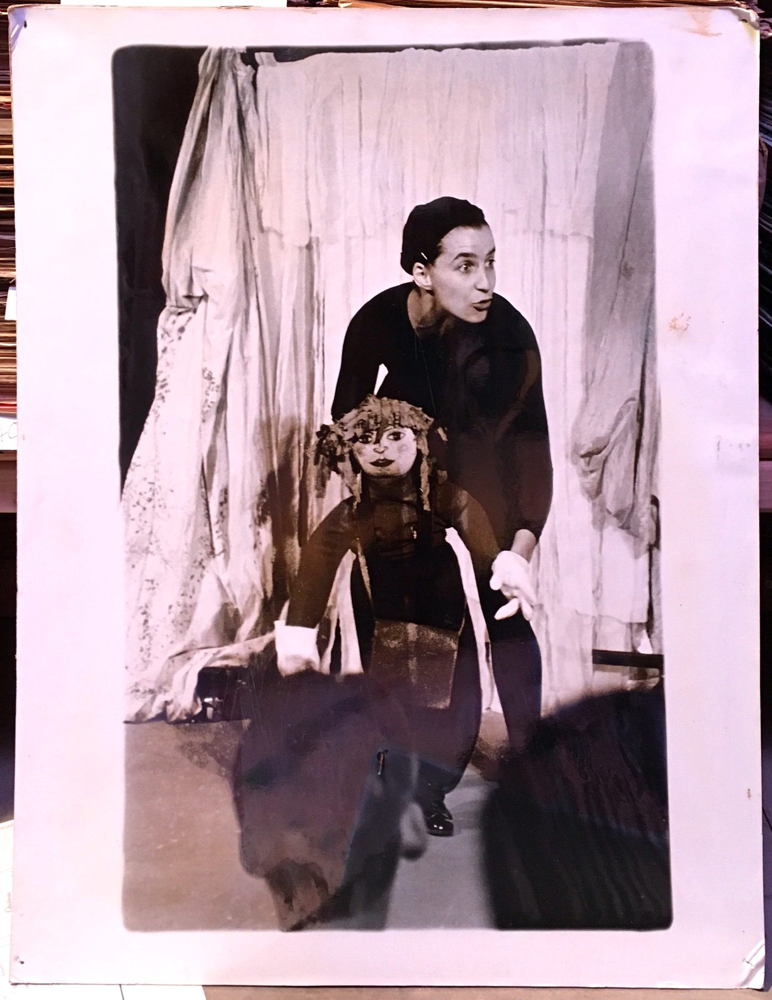

Erzähltheater für alle Kinder, die immer noch über die nächste Hügelkuppe schauen wollen: Eine Frau und viele Gesichter – auf ungewöhnliche Weise schlüpft Franziska Senn in die verschiedenen Rollen der Geschichte. Die züngelnde Schlange, der blubbernde Fisch und die bösartige Spinne bringen die Kinder zum Lachen, während Serena Dankwas Gitarrenspiel die Figuren treffend untermalt.
«Eine eingängige Fabel ohne überzogene Moral, in der Franziska Senn mit sichtbarer Freude am Spiel und viel Einfühlungsvermögen die verschiedenen Rollen ausfüllt. Gelungenes Erzähltheater.» Wilhelmshavener Zeitung
«Es entsteht ein farbenprächtiger Bilderbogen einer Geschichte, die keinen Pomp und Prunk braucht, um zu wirken.» Jeversches Wochenblatt
- Stück / Spiel
- Franziska Senn
- Musik
- Serena Dankwa (Gitarre)
